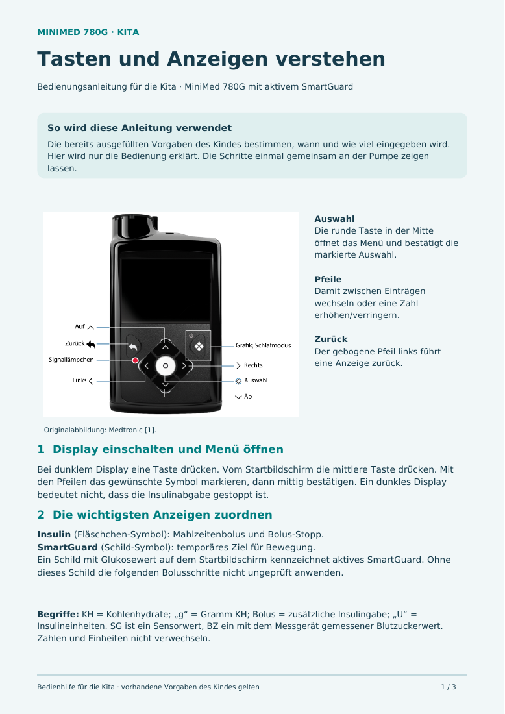
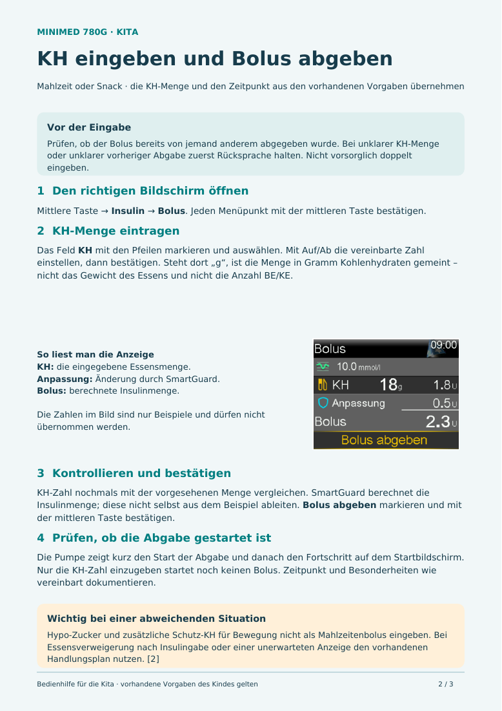
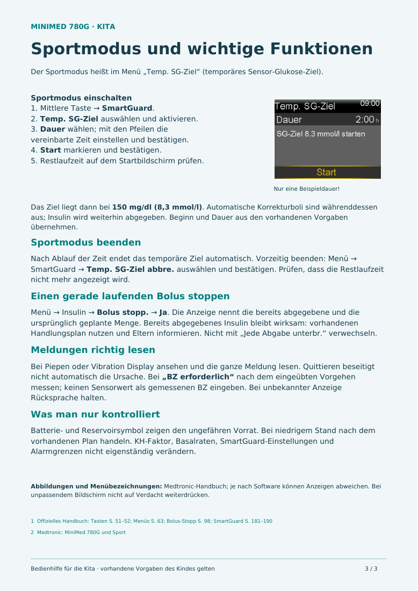

🍴 Ausgewählte Gerichte
📅 Wöchentlicher Speiseplan
Montag bis Freitag: Geplante Portionen und Kohlenhydrate für die Kita. KH sind keine Insulineinheiten.
Mahlzeit bearbeiten
➕ Neues Gericht direkt im Wochenplan anlegen
Nur im Administrator-Modus. Das neue Gericht wird auch dauerhaft in der Lebensmittelliste gespeichert.
🍽️ Mehr essen? Zusatzportion berechnen
Wähle im Wochenplan „Mehr essen“, gib die zusätzliche Menge ein und berechne nur die zusätzlichen Kohlenhydrate. Eine Insulingabe wird nicht berechnet.
Vor jeder Pumpeneingabe mit dem individuellen Kita-Plan und bereits abgegebenen Bolusgaben abgleichen. Keine doppelte Eingabe.
📝 Dokumentierte Zusatzportionen
Speicherung nur auf diesem Gerät. Für andere Kita-Geräte ist eine gesonderte Übertragung erforderlich.
📖 Yemeklerim
➕ Yeni yemek
Yedekleme
🧰 Notfall
⬇️ Unterzuckerung
Çocuk uyanık ve güvenle yutabiliyorsa, kendi diyabet ekibinizin hipoglisemi planındaki hızlı karbonhidrat miktarını uygulayın. Ölçümü plandaki sürede tekrar edin. Pompa kullanan çocuklarda miktar değişebilir.
Bayılma, nöbet veya yutamama: Ağızdan yiyecek/içecek vermeyin. 112'yi arayın. Reçeteli glukagon varsa eğitim aldığınız şekilde uygulayın.
⚡ Hızlı karbonhidrat örnekleri
Miktarı çocuğun kişisel hipoglisemi planına göre belirleyin. Diyet içecekler, çikolata ve yağlı yiyecekler hızlı tedavi için uygun değildir. Bilinci kapalıysa ağızdan hiçbir şey vermeyin.
⬆️ Hoher Blutzucker
Ölçümü kontrol edin. Diyabet ekibinizin planına göre ketonları ve pompa/infüzyon setini kontrol edin. Pompa kaynaklı insülin kesintisi hızla ciddi yüksek şekere yol açabilir.
Kusma, karın ağrısı, derin/hızlı nefes, bilinç değişikliği: Acil yardım alın (112).
📞 Acil iletişim
💙 MiniMed 780G – bebilderte Kita-Anleitung
Diese Anleitung erklärt die Pumpentasten, die Eingabe von Kohlenhydraten und das temporäre SmartGuard-Ziel anhand der hochgeladenen, bebilderten Kurzanleitung. Sie gilt für die darin beschriebene Bedienung mit aktivem SmartGuard.
1 · Tasten und Anzeigen verstehen
Mittlere Auswahltaste, Pfeiltasten, Zurück-Taste und SmartGuard-Anzeige.

2 · Kohlenhydrate eingeben und Bolus abgeben
Vorherige Abgabe prüfen, Insulin → Bolus öffnen, KH in Gramm eingeben, Angaben kontrollieren und nur nach Einweisung bestätigen.

3 · Sportmodus und wichtige Funktionen
SmartGuard → Temp. SG-Ziel, vereinbarte Dauer einstellen, Restlaufzeit prüfen; außerdem Hinweise zu Alarmen und Bolus-Stopp.

Die Abbildungen stammen aus deiner hochgeladenen Kurzanleitung. Je nach Pumpensoftware können Menüs abweichen.
👧 Çocuğum
Öğün geçmişi
🏫 Kita-Übersicht
📋 Persönliche Übergabe
Notieren Sie Kontakt, erlaubte Maßnahmen und den schriftlichen Notfallplan im Kinderprofil. Keine sensiblen Angaben auf gemeinsam genutzten Geräten speichern.
🚨 Was tun im Notfall?
Bei Bewusstlosigkeit, Krampfanfall oder fehlender Schluckfähigkeit: nichts oral geben, 112 rufen und den individuellen Glukagon-Notfallplan befolgen, sofern geschult.
📝 Übergabe-Notiz (nur auf diesem Gerät)
📅 Kita-Tagesprotokoll
Für die Übergabe: Mahlzeiten und Beobachtungen dokumentieren. Keine Insulindosis erfassen. Daten bleiben nur auf diesem Gerät.
🔐 Administrator
Gerichte ausschließlich hier bearbeiten. Vor Änderungen mit PIN entsperren.
Gerichte verwalten
🔐 Lebensmittel bearbeiten
Zum Ändern von Gerichten, Bildern, Icons und KH-Werten den Bearbeitungsmodus entsperren.
Änderungen werden nur in diesem Browser gespeichert. Bitte regelmäßig eine Sicherung erstellen.
⚙️ Einstellungen
Administrator-PIN ändern
Die PIN ist nur eine lokale Bearbeitungssperre, keine sichere Benutzeranmeldung.
Anzeige
Datensicherung
Änderungen werden nur auf diesem Gerät gespeichert. Regelmäßig eine Sicherung erstellen.
Hinweise
KH-Werte sind Schätzwerte. Keine Insulindosisberechnung. Bei Kita-Nutzung gelten der individuelle Diabetesplan und die Schulung des Personals.